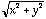
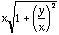

1. What is a module?
2. List all the things that a module may contain.
3. What differences are there between modules and procedures?
4. (review) What is the difference between the two kinds of IMPORT from library modules?
5. Discuss the possible meanings of the word "standard" in the expression "standard library module."
6. Why are input and output among the most difficult library facilities to standardize?
7. What are the character input/output facilities in your implementation? Make detailed notes from the manuals on what their names and parameters are, what modules they come from (STextIO, InOut, Terminal, etc.) whether they skip spaces and/or end-of-line marks before or after reading the character, and what they after reading the character (put it back in the input buffer or not.)
8. What are the string input/output facilities in your implementation? Make detailed notes from the manuals on what their names and parameters are, what modules they come from (STextIO, InOut, Terminal, etc.) whether they skip spaces and/or end-of-line marks before or after reading the string, and what they do when there is not enough room in their parameter for the characters read.
9. What are the conversion facilities (numeric/text) in your implementation? Make detailed notes from the manuals on what their names and parameters are, what modules they come from, and how they handle errors.
10. Explain why STextIO, SWholeIO, and SRealIO do not need separate redirection procedures (one for each) but a single OpenOutput or OpenInput can be written to serve all these. Alternately, explain why RealInOut, when a separate module, does not need an OpenInput and OpenOutput of its own.
11. What is meant by the expression "module hierarchy"? Illustrate with some examples.
12. What is a compilation unit?
13. Make a list of the differences among the different types of compilation units discussed in this chapter.
14. Document for your system the exact suite of file name extensions used by source files, and object files. Are there any differences between the treatment of program and library modules? Compare with the chart in section 6.5.
15. What are the main types of libraries, and how is each used by a programmer?
16. How does the module mechanism allow side effects to be reduced?
17. What is "module decoupling?"
18. If the definition part of a library module is changed, what modules need to be compiled or re-linked? Why?
19. If the implementation part of a library module is changed, what modules need to be compiled or re-linked? Why?
20. What advantage is there to not using the implementation details of a data type in the client programs that import the type?
21. Describe the major ways of handling library module errors and communicating these back to client programs.
22. Look up (or recall) the definitions of the three trigonometric functions cotangent, secant, and cosecant. Write these in terms of the functions in RealMath.
NOTE: Where facilities are available and it is appropriate, programs written for these exercises ought to have the option of taking input from a file or of directing output to a file.
23. (Requires redirection) Write a program module that will print out the cardinals from 0 to 99 in three columns, headed "decimal form", "binary form", and "hexadecimal form". Do this and obtain a printout for your reference. This question is easy to answer if WriteHex and WriteOct are available, so be sure to create your own procedures for this purpose.
24. (Requires redirection) Write a program that will take several lines of text from the keyboard and place it in the file my.text on a disk. (It is a good idea to use a non-system disk to avoid clobbering important files). Verify that you have done this correctly by then transferring the strings to the screen or, if possible to the printer from the disk file.
25. Write a program that will take an input line of text and write each letter twice as it comes in on both the screen and a file simultaneously (or at least in very close succession). Hint: Import more than one Write. A keyboard response of "How are you?" should output in both places as "HHooww aarree yyoouu??".
26. Use the exponential growth formula A = A0 ekt and consider the growth of bacteria in this manner. Write a program to accept as data the number of organisms present at two times, and the amount of time elapsed for each measurement. (The first need not be zero). The program should compute and print the constant k and a "doubling time" (analogous to half life in the decay question.) It should then ask for a third time, and compute and print the number of bacteria expected to be present at that time.
27. Human populations also grow exponentially. Compute the doubling time for a human population assuming growth rates of 1%, 2%, ... 15% annually, and print the results in a table.
28. Suppose the human population began with two individuals at time t = 0 and had a growth rate that averaged 2%. How many people would there be after 1000, 2000, ... 7000 years? What if the growth rate had been 3% instead?
29. Write, enclose in a library module and test two procedures that compute k and the half-life from each other in processes using the formula A = A0 ekt.
30. Actually set up MyRealMath with the log function and a tenToTheX function as its inverse. Include also the Entier function found in MathLib, (or, if you are using MathLib already, include the Round function instead) and functions called Max and Min that return the largest (smallest) of two REAL parameters, respectively. Include at least one other function that you think may be useful. (Magnitude, and Power are possibilities).
31. Add to MyRealMath the other three trig functions, and their inverse functions.
32. The entier or greatest integer function has a companion function called the ceiling function. It takes a real parameter and returns the least integer greater than or equal to the parameter. Write and test a procedure to do this. Include it in your mathematical library.
33. Write a program to compute the area of a triangle given its three sides. Use any formulas from trigonometry or elsewhere that you wish, but include error trapping so that triples like 2, 2, 30 are rejected as impossible for triangle side measurements. Hint: The law of Cosines or Heron's formula may be applicable. Now enclose both this and a procedure based on the example in section 6.4.3 in a library module, and write a program module that asks the user for data about a triangle and then selects the correct imported procedure to compute the area.
34. Notice that the computation given in the program module in section 6.4.1 can get into trouble under some circumstances. The expression x2 + y2 may, in whole or in part be larger than MAX (REAL) even though its square root is not. Suppose x < y (if it isn't, swap them.) Now rewrite as  and there will be much less chance of the calculation overflowing the real type. Write and test a procedure for doing the calculation in this manner. It needs to contain code to test which is larger and a procedure for swapping when that becomes necessary.
35. Complete and test the module Fractions in section 6.5.1 and add to it the error handling routines suggested in section 6.6. Alter the module in the following two ways:
a. Denominators are always positive; the sign of a fraction is the sign of its numerator.
b. All fractions are returned in lowest terms.
c. Refine the Add procedure to reduce the possibility of overflowing the integer type by choosing the lowest common denominator for the addition instead of using the product of the two denominators.
d. (optional) Also refine the Mul procedure by eliminating common factors between the numerator of the multiplier and the denominator of the multiplicand, and vice-versa before doing the operation.
36. In section 6.4 in the module Pythagoras the procedure GetReal was employed to poll repeatedly for a real number from the keyboard. The same procedure was used later in the module TriArea in section 6.4.3. Also, the non-standard procedure HoldScreen supplied in the Metropolis versions could be employed in place of the code:
WriteString ("Press a key to continue ==>");
ReadChar (key);
These are therefore both good candidates for inclusion in a user library module. Write the module Inputs to encapsulate these two, along with similar procedures to the first for obtaining items of the types (where available) CARDINAL, INTEGER, LONGCARD, LONGINT, AND LONGREAL. There may be other useful procedures you can add to this module.
37. Write a test harness to test all aspects of the module Points to ensure that the various procedures work correctly. Choose sample data in such a way that it encounters a variety of different situations in the testing. Try to make things go wrong. Can you suggest any error handling techniques to prevent the problems you have uncovered?
38. A line segment is the set of all points on the straight line joining two specified endpoints. It can therefore be represented as
TYPE Segment = ARRAY [0 .. 1] OF Point;
where Point is the abstract data type defined in section 6.9. Write and test a library module Segments implementing the ADT Segment along with suitable procedures for manipulating items of this type. Include error handling as appropriate. Apart from specifying that Point must be imported from Points, the rest of the actual design is left to the student. If this problem is solved as an exercise for a course however, the definition module ought to be approved by the instructor before the implementation is done. Be sure to include a detailed explanation in the design stage for all the mathematics employed and a justification for each procedure included, as has been done in this chapter. The design ought also to include separate mention (with headers) of any procedures deemed to be necessary for inclusion in the implementation for its private use.
39. Using the module in question 38, solve the problems in the exercises for Chapter 4, numbers 41 through 43. Include a couple more similar exercises.
40. In a similar manner, a triangle can be abstracted as a triple of points. Repeat the design exercise for problem 38 with the type Triangle and test the resulting module.